Uma estética não é enfeite que se passa por cima da imagem no fim. É uma linguagem visual: antes de alguém entender o que a foto mostra, ela já disse como a pessoa deve se sentir, quão sério é o assunto e a que mundo aquilo pertence. Para provar isso, este módulo usa uma única cena — uma vendedora de açaí numa feira de Belém no fim da tarde — e a reescreve nas sete famílias estéticas.
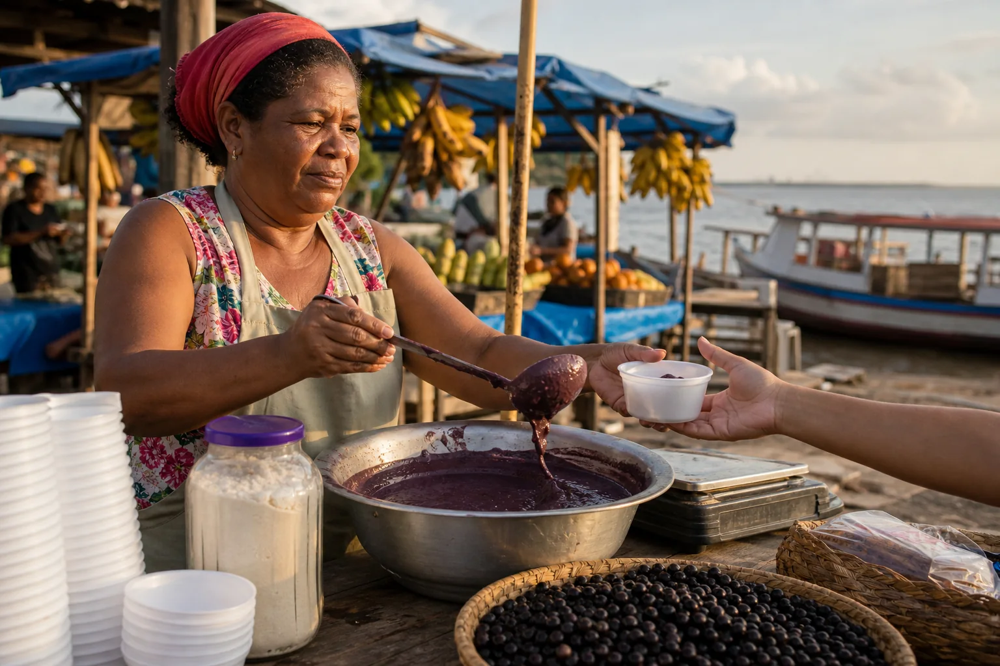
Prompt usado
Medium-wide shot of an açaí vendor at an open-air riverside market in Belém, Brazil, late afternoon. She is a Black Brazilian woman in her late 40s with short natural hair under a faded red headscarf, wearing a sleeveless floral blouse and a plain canvas apron, ladling thick dark-purple açaí from a large aluminium basin into a white plastic bowl for a customer whose hand reaches in from the right edge. On her wooden stall: stacked bowls, a jar of tapioca flour, a scale, straw baskets of açaí berries. Behind her, blurred market stalls with blue tarpaulin awnings, hanging bunches of bananas, and a glimpse of the river with a wooden boat. Shot at eye level on a 35mm lens at f/4, vendor on the left third. Warm low sun from the right, around 4000K, soft side shadows. Neutral, straightforward documentary photograph, natural colors, no stylization. No text anywhere in the scene: no signs, no chalkboards, no printed words on clothing, no brand names or logos on scales or products.
A cena-base: registro documental direto, cores naturais, sol baixo da direita, vendedora no terço esquerdo servindo açaí da bacia de alumínio para a mão de um cliente. Todas as versões do módulo são edições desta mesma imagem — a pessoa, o gesto e a situação ficam; só a linguagem muda.
O assunto não muda em nenhuma versão. O que muda é cor, luz, composição, textura e clima — as mesmas camadas que você aprendeu a ler no módulo 1-2. É isso que faz a comparação ser justa: quando a mensagem muda, foi a estética que mudou.
1Estética é linguagem: meta-mensagens
O que é
Cada família funciona como um sotaque. Minimalista diz clareza e confiança. Cinematográfico diz “isto é uma história e importa”. Futurista diz inovação e velocidade. Sonhador diz suavidade e memória. O assunto pode ser o mesmo; o sotaque decide como ele é recebido.
A temperatura emocional das escolhas
| Escolha | Tende a comunicar |
|---|---|
| Cores quentes (âmbar, terracota, dourado) | emoção, proximidade, humanidade |
| Cores frias (azul, ciano, cinza-azulado) | inteligência, distância, tecnologia |
| Escuro dominante (clave baixa) | poder, tensão, mistério |
| Pastel e contraste baixo | delicadeza, nostalgia, calma |
| Brilho, cromado, reflexo | novidade, luxo tecnológico |
| Grão, desbotado, imperfeição | autenticidade, memória, verdade |
Por que aprender
Mudar um ingrediente já muda a leitura — você viu isso no módulo 1-1 com a luz. Mudar todos na mesma direção muda a família inteira. Veja a cena-base reescrita nas sete famílias. Cada imagem é uma edição da base que pediu para refazer toda a imagem na nova linguagem, preservando a mulher, o gesto e o cliente:
Conceitos-chave em ação
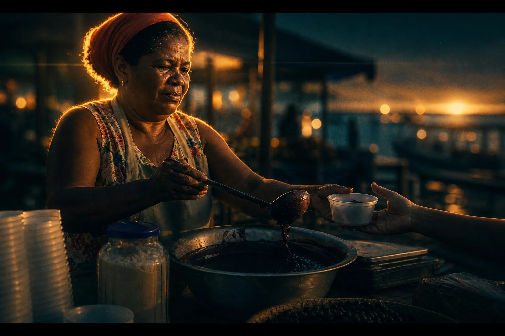
Instrução de edição usada (sobre a imagem-base)
Fully re-render this ENTIRE image — subject AND background — as a CINEMATIC film still from a drama, and make the difference from the base unmistakable. Add thin black letterbox bars at the top and bottom (2.39:1 anamorphic widescreen frame). Dusk: the sun has just set behind the river, a single low golden backlight rims her headscarf, cheek and shoulders while the front of her face falls into soft shadow. Heavy teal-and-orange film grade: the whole market and sky sink into deep teal and blue-green shadows, only her skin and the rim light stay warm amber. Very shallow depth of field: everything behind her melts into large soft oval anamorphic bokeh, horizontal lens flare streak from the backlight, light haze in the air, visible film grain and halation around highlights. Moody, weighty, quiet. Keep the same woman, the same action of ladling açaí into the bowl and the customer's hand. No text on signs.
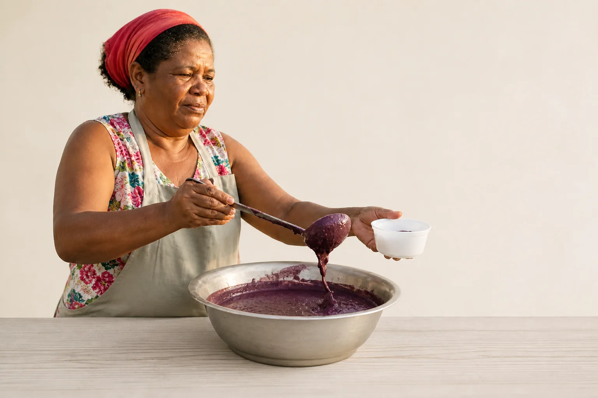
Instrução de edição usada (sobre a imagem-base)
Fully re-render this ENTIRE image — subject AND background — as a MINIMALIST photograph: remove the market, the awnings, the bananas, the people, the boat and the clutter; she now stands in front of a plain seamless warm off-white wall, with only the aluminium basin and one white bowl on a clean pale wooden counter. Soft diffused shadowless light, neutral palette of off-white, pale grey and the single deep purple of the açaí as the only strong color, huge negative space on the right, perfectly calm frontal framing, clean crisp commercial finish, no grain. Keep the same woman, her red headscarf, blouse and apron, same gesture of ladling açaí.
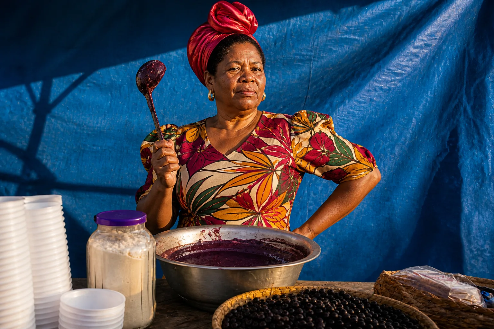
Instrução de edição usada (sobre a imagem-base)
Fully re-render this ENTIRE image — subject AND background — as a high-fashion EDITORIAL campaign photograph: the same woman, now styled for a magazine cover story, standing tall behind the basin with a bold confident pose, one hand on her hip and the other raising the ladle like a statement, chin up, direct gaze to camera; her headscarf becomes a sculptural red silk wrap, the floral blouse becomes a structured bold print, gold earrings. Studio-quality strobe lighting with a large beauty dish from the front-left, crisp shadows, polished skin and textures, saturated rich colors, the market behind simplified into a graphic backdrop of blue tarpaulin. Luxury, confident, trend-setting. No text on signs.
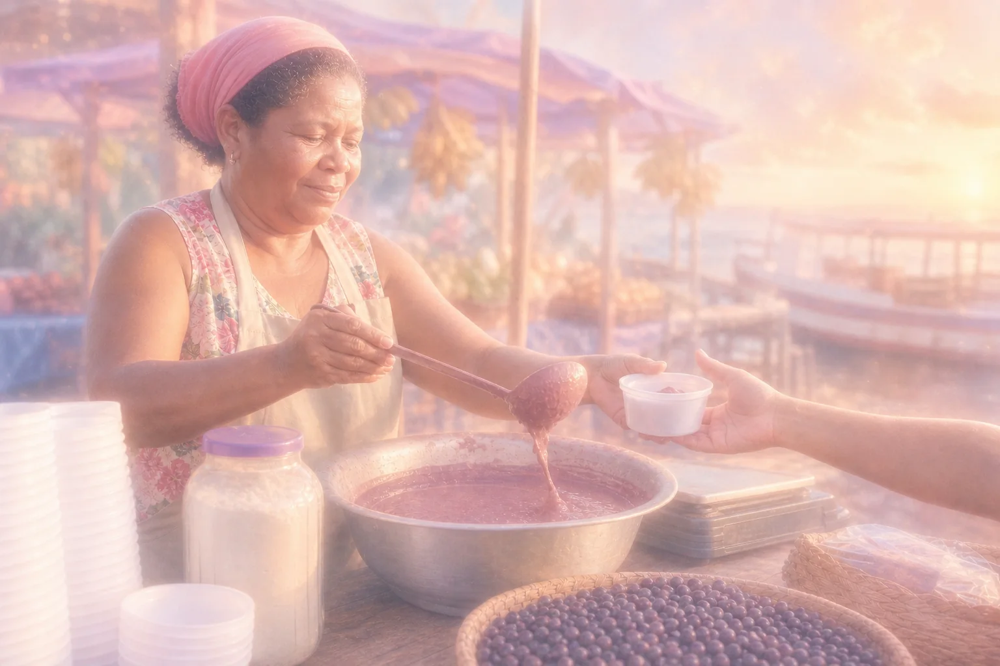
Instrução de edição usada (sobre a imagem-base)
Fully re-render this ENTIRE image — subject AND background — in a DREAMY SOFT aesthetic: pastel and muted palette of peach, lilac, powder pink and milky blue, the açaí turned a soft mauve, strong glow and haze over everything, blooming soft highlights, gentle backlight melting the edges, low contrast lifted shadows, slight soft-focus diffusion like a vintage mist filter, the background dissolved into pastel light. Tender, nostalgic, introspective mood; she looks down at the bowl with a faint smile. Keep the same woman, headscarf, apron, gesture and the customer's hand. No text on signs.
Quatro das sete famílias. Cinematográfico: faixas pretas de tela de cinema, anoitecer, contraluz dourada contornando o lenço, fundo afundado em azul-petróleo e bokeh. Minimalista: o mercado inteiro some; sobram parede lisa, bacia, tigela e o roxo do açaí como única cor forte. Editorial: a mesma mulher vira capa de revista — pose firme, lenço de seda, luz de estúdio. Sonhador: pastel, névoa luminosa, contraste baixo.
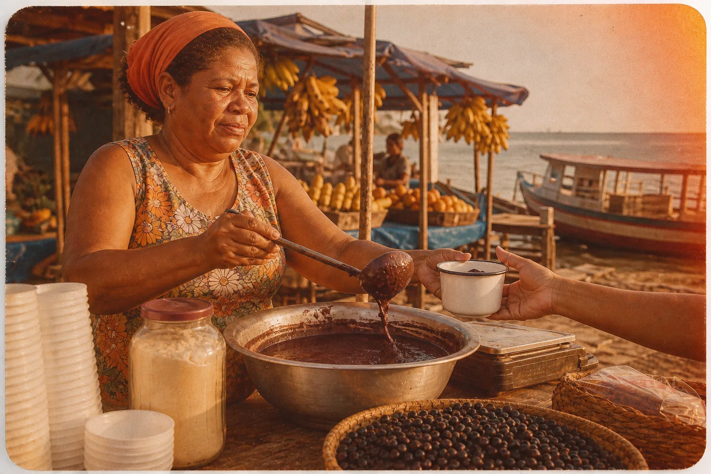
Instrução de edição usada (sobre a imagem-base)
Fully re-render this ENTIRE image — subject AND background — as an authentic RETRO / VINTAGE photograph from a 1970s Brazilian family album: warm faded Kodachrome-like colors with yellowed whites and orange-shifted skin, visible coarse film grain, soft slightly imperfect focus, light leak in the upper right corner, a faint vignette, rounded print corners and a thin white paper border, candid unposed feeling. Period-correct details: her clothes become a 1970s floral dress, the plastic bowl becomes an enamel cup, a wooden boat with painted stripes behind. Keep the same woman, headscarf, gesture of serving açaí and the customer's hand. No text on signs.
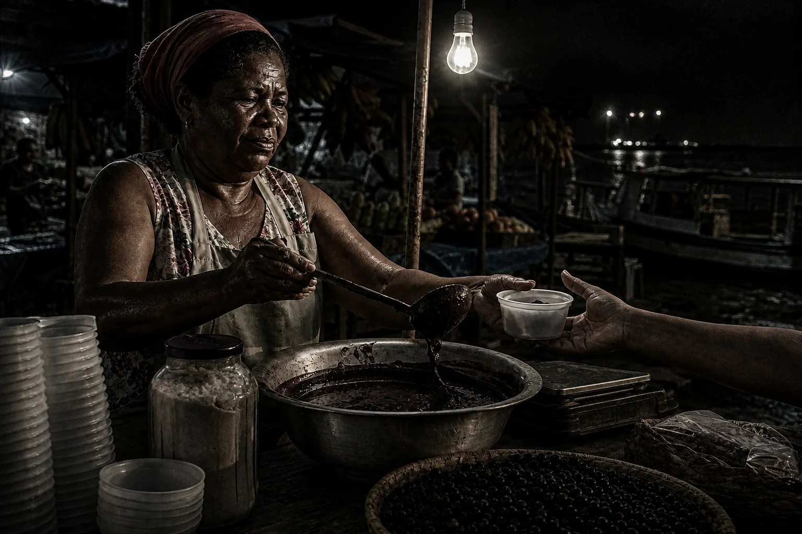
Instrução de edição usada (sobre a imagem-base)
Fully re-render this ENTIRE image — subject AND background — in a GRITTY DARK aesthetic: night-time, the stall lit only by one hard bare bulb hanging above her, very high contrast, deep crushed black shadows swallowing the market, desaturated palette of dirty greys and browns with the purple açaí nearly black, rough textures emphasized — sweat on skin, scratched aluminium, cracked wood, wet concrete floor — heavy grain, urban documentary realism, raw and intense. Her expression serious and tired. Keep the same woman, headscarf, apron, gesture and the customer's hand. No text on signs.
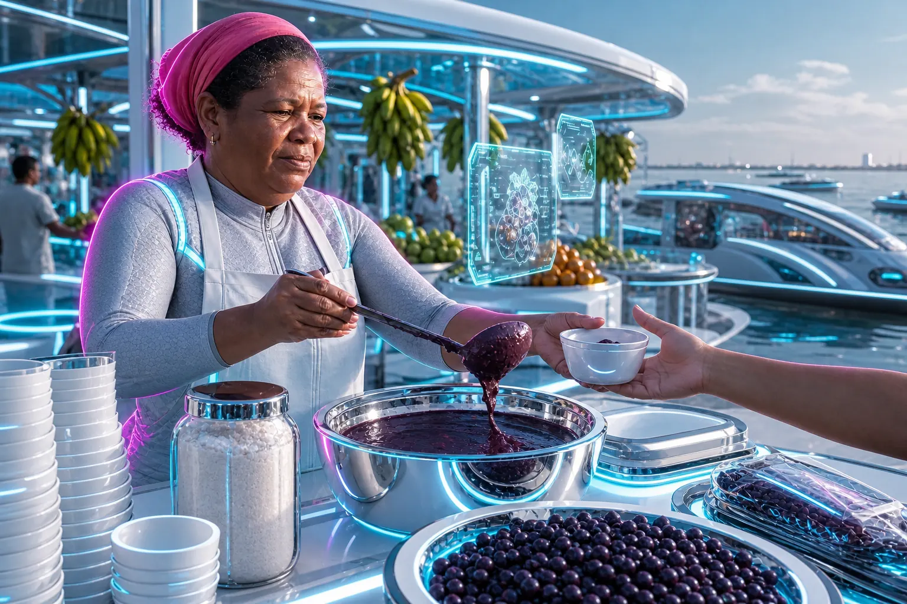
Instrução de edição usada (sobre a imagem-base)
Fully re-render this ENTIRE image — subject AND background — as a FUTURISTIC TECH vision of the same market in 2080: the wooden stall becomes a sleek white-and-chrome counter with glowing edge lights, the aluminium basin becomes a polished chrome vessel, holographic cyan interface panels float above the fruit, the awnings become curved glass canopies, the river behind has sleek electric boats. Cool palette of electric cyan, white and chrome with magenta rim light outlining her silhouette, glossy reflective surfaces, clean geometry, crisp digital precision, no grain. Her headscarf and apron become refined technical fabric. Keep the same woman, face, gesture of serving açaí and the customer's hand. No text anywhere.
Prompt usado
Medium-wide shot of an açaí vendor at an open-air riverside market in Belém, Brazil, late afternoon. She is a Black Brazilian woman in her late 40s with short natural hair under a faded red headscarf, wearing a sleeveless floral blouse and a plain canvas apron, ladling thick dark-purple açaí from a large aluminium basin into a white plastic bowl for a customer whose hand reaches in from the right edge. On her wooden stall: stacked bowls, a jar of tapioca flour, a scale, straw baskets of açaí berries. Behind her, blurred market stalls with blue tarpaulin awnings, hanging bunches of bananas, and a glimpse of the river with a wooden boat. Shot at eye level on a 35mm lens at f/4, vendor on the left third. Warm low sun from the right, around 4000K, soft side shadows. Neutral, straightforward documentary photograph, natural colors, no stylization. No text anywhere in the scene: no signs, no chalkboards, no printed words on clothing, no brand names or logos on scales or products.
As outras três, com a base para referência. Retrô: álbum de família dos anos 70, cores amareladas, grão, borda de papel. Sombrio: noite, uma lâmpada nua, sombras pretas, texturas ásperas. Futurista: balcão cromado, painéis holográficos, contorno magenta. Mesma mulher, mesmo gesto — sete mensagens diferentes.
21 · Cinematográfico: a imagem que parece cena de filme
O que é
O cinematográfico imita o que um diretor de fotografia faz num set: uma fonte de luz principal com intenção (muitas vezes contraluz ou lateral), fundo mais escuro que o sujeito, profundidade de campo curta, atmosfera no ar (névoa, fumaça, poeira) e gradação de cor — a paleta tratada como um todo, como no filme.
Por que aprender
É a família mais usada — e a mais desgastada — porque cinematic virou palavra mágica em prompt. Sozinha, ela entrega o clichê médio (contraluz dourada, bokeh). A versão com intenção escolhe qual cinema: o drama quente de fim de tarde, o suspense frio, o preto e branco dos anos 40.
| Comunica | Use para | Palavras de prompt | Armadilhas |
|---|---|---|---|
| história, emoção, importância, alta produção | narrativa, anúncio emocional, trailer, capa de vídeo, marca que quer peso | film still, anamorphic, backlight, rim light, teal and orange grade, shallow depth of field, haze, halation, film grain | “cinematic” sozinho; bokeh e contraluz dourada em tudo; drama num assunto banal fica pretensioso |
Conceitos-chave em ação
Instrução de edição usada (sobre a imagem-base)
Fully re-render this ENTIRE image — subject AND background — as a CINEMATIC film still from a drama, and make the difference from the base unmistakable. Add thin black letterbox bars at the top and bottom (2.39:1 anamorphic widescreen frame). Dusk: the sun has just set behind the river, a single low golden backlight rims her headscarf, cheek and shoulders while the front of her face falls into soft shadow. Heavy teal-and-orange film grade: the whole market and sky sink into deep teal and blue-green shadows, only her skin and the rim light stay warm amber. Very shallow depth of field: everything behind her melts into large soft oval anamorphic bokeh, horizontal lens flare streak from the backlight, light haze in the air, visible film grain and halation around highlights. Moody, weighty, quiet. Keep the same woman, the same action of ladling açaí into the bowl and the customer's hand. No text on signs.
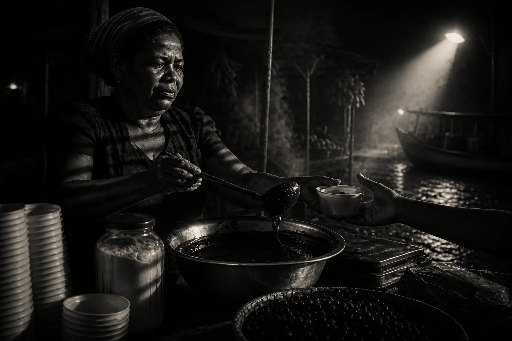
Instrução de edição usada (sobre a imagem-base)
Fully re-render this ENTIRE image — subject AND background — as a 1940s FILM NOIR still, unmistakably noir: pure high-contrast black-and-white, night, one hard low-key spotlight from the right, bold parallel venetian-blind stripes of light and shadow cutting diagonally across her face, arms and the basin, the rest of the market swallowed in inky black, thick cigarette-like smoke drifting through the light beam, wet cobblestones glistening, her floral blouse replaced by a dark 1940s dress with padded shoulders, mysterious tension like a detective film. Keep the same woman, headscarf, gesture of ladling and the customer's hand. No text on signs.
Duas edições da mesma base, as duas “de cinema”. À esquerda, o drama quente: contraluz do rio, pele âmbar, fundo azul-petróleo. À direita, o noir dos anos 40: preto e branco de alto contraste, noite, um único poste de luz dura à direita, chão molhado brilhando e o resto do mercado engolido pelo preto. Mesma família, meta-mensagens vizinhas mas diferentes: emoção × mistério e tensão.
32 e 3 · Minimalista e Editorial: clareza e confiança
O que é
As duas famílias vivem perto das marcas, mas por caminhos opostos. O minimalista convence tirando: remove contexto até sobrar só o essencial, e o vazio passa a significar calma e segurança. O editorial convence afirmando: pose ousada, figurino de campanha, pele e texturas polidas, luz de estúdio — a imagem de quem dita tendência.
| Família | Comunica | Use para | Palavras de prompt | Armadilhas |
|---|---|---|---|---|
| Minimalista | clareza, confiança, modernidade, premium | marca, tecnologia, skincare, produto de luxo, site institucional | minimalist, seamless off-white backdrop, soft diffused shadowless light, neutral palette, one accent color, generous negative space, clean frontal framing | vira “vazio sem alma”; sem textura parece banco de imagem; perde o contexto que dava verdade à cena |
| Editorial / moda | confiança, tendência, luxo, atitude | moda, beleza, campanha de marca, retrato de liderança | high-fashion editorial, bold confident pose, direct gaze, studio strobe, beauty dish, crisp shadows, polished skin, statement styling, rich saturated color | pele plástica demais; pose rígida de catálogo; styling que apaga a identidade da pessoa |
Por que aprender
Repare o que cada uma fez com a feira. O minimalista apagou Belém: bom para vender o açaí como produto premium, ruim para contar a história da feira. O editorial transformou a vendedora em protagonista de campanha: ótimo para uma marca que quer celebrar quem produz, arriscado se o público espera documentário. A escolha depende do objetivo, não do gosto do dia.
Conceitos-chave em ação
Instrução de edição usada (sobre a imagem-base)
Fully re-render this ENTIRE image — subject AND background — as a MINIMALIST photograph: remove the market, the awnings, the bananas, the people, the boat and the clutter; she now stands in front of a plain seamless warm off-white wall, with only the aluminium basin and one white bowl on a clean pale wooden counter. Soft diffused shadowless light, neutral palette of off-white, pale grey and the single deep purple of the açaí as the only strong color, huge negative space on the right, perfectly calm frontal framing, clean crisp commercial finish, no grain. Keep the same woman, her red headscarf, blouse and apron, same gesture of ladling açaí.
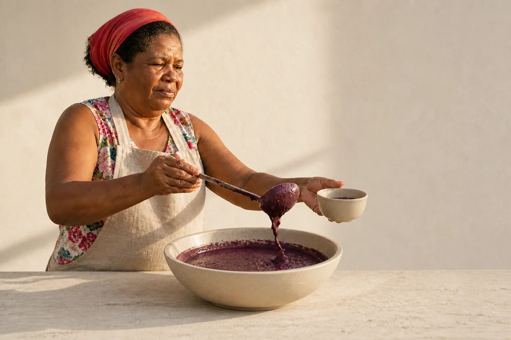
Instrução de edição usada (sobre a imagem-base)
Push this minimalist image into the QUIET LUXURY sub-style: replace the plastic bowl with a hand-thrown matte stone bowl, the aluminium basin with a brushed pale ceramic vessel, the counter with light travertine stone, her apron with an unbleached heavy linen apron; add one soft raking window light from the left creating a long delicate shadow on the wall; palette of stone, oat, bone white and the deep açaí purple; restrained, expensive, tactile. Keep the same woman, her headscarf, blouse and gesture, and the same empty wall and framing.
A da direita é uma edição da minimalista (encadeamento de dois níveis). O quiet luxury mantém o vazio, mas troca plástico e alumínio por pedra fosca, cerâmica e linho cru, e acrescenta uma luz rasante longa na parede. O minimalismo puro diz “claro e confiável”; o quiet luxury diz “caro sem precisar gritar” — e isso vem quase só de material e textura.
Instrução de edição usada (sobre a imagem-base)
Fully re-render this ENTIRE image — subject AND background — as a high-fashion EDITORIAL campaign photograph: the same woman, now styled for a magazine cover story, standing tall behind the basin with a bold confident pose, one hand on her hip and the other raising the ladle like a statement, chin up, direct gaze to camera; her headscarf becomes a sculptural red silk wrap, the floral blouse becomes a structured bold print, gold earrings. Studio-quality strobe lighting with a large beauty dish from the front-left, crisp shadows, polished skin and textures, saturated rich colors, the market behind simplified into a graphic backdrop of blue tarpaulin. Luxury, confident, trend-setting. No text on signs.
Editorial em tamanho maior: note como a luz de estúdio (beauty dish à esquerda, sombras nítidas) e a pose de queixo erguido mudam a relação com quem olha — ela deixa de estar servindo e passa a encarar a câmera.
44 e 5 · Sonhador e Retrô: memória e afeto
O que é
As duas famílias falam de tempo e sentimento, mas de jeitos diferentes. O sonhador é a memória como ela é sentida: difusa, luminosa, macia, com as bordas derretendo. O retrô é a memória como ela foi registrada: o objeto fotográfico de uma época, com o grão, a cor e os defeitos daquele suporte.
| Família | Comunica | Use para | Palavras de prompt | Armadilhas |
|---|---|---|---|---|
| Sonhador / suave | emoção, nostalgia, calma, vulnerabilidade | lifestyle, histórias afetivas, conteúdo de memória, bem-estar | dreamy, pastel peach and lilac, glow and haze, blooming highlights, low contrast, lifted shadows, soft-focus mist filter, gentle backlight | vira névoa sem assunto; pastel demais fica infantil; perde nitidez onde precisava de informação |
| Retrô / vintage | autenticidade, memória, humanidade, herança | marcas tradicionais, histórias de família, conteúdo humano e espontâneo | 1970s family album photo, Kodachrome-like colors, yellowed whites, coarse film grain, light leak, vignette, white paper border, candid | anacronismos (objetos modernos numa foto dos anos 70); filtro sépia genérico; “vintage” sem dizer qual década |
Por que aprender
No retrô, a década é a palavra mais importante do prompt. Anos 70 (slide saturado, amarelos quentes), anos 90 (negativo colorido desbotado) e começo dos 2000 (flash de câmera descartável) são três estéticas diferentes — e cada uma evoca uma geração diferente do público. Veja duas edições da mesma base, as duas “retrô”:
Conceitos-chave em ação
Instrução de edição usada (sobre a imagem-base)
Fully re-render this ENTIRE image — subject AND background — as an authentic RETRO / VINTAGE photograph from a 1970s Brazilian family album: warm faded Kodachrome-like colors with yellowed whites and orange-shifted skin, visible coarse film grain, soft slightly imperfect focus, light leak in the upper right corner, a faint vignette, rounded print corners and a thin white paper border, candid unposed feeling. Period-correct details: her clothes become a 1970s floral dress, the plastic bowl becomes an enamel cup, a wooden boat with painted stripes behind. Keep the same woman, headscarf, gesture of serving açaí and the customer's hand. No text on signs.
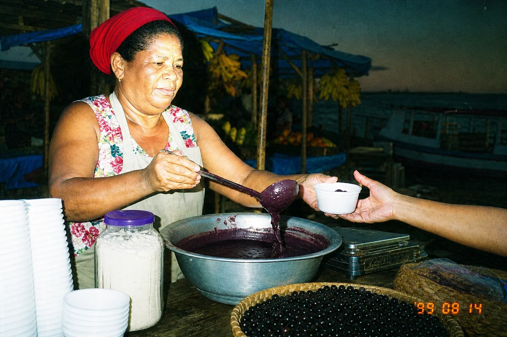
Instrução de edição usada (sobre a imagem-base)
Fully re-render this ENTIRE image — subject AND background — as a late-1990s / early-2000s DISPOSABLE CAMERA FLASH snapshot: harsh on-camera direct flash flattening her face with a bright hotspot and a hard dark shadow cast on the stall behind her, background falling into murky dusk, slightly greenish-cyan color cast, oversaturated reds, visible date stamp style orange digits in the lower right corner reading 99 08 14, casual candid party-snapshot energy, grainy low-resolution film scan. Keep the same woman, headscarf, gesture of serving açaí and the customer's hand. No other text.
À esquerda, o álbum dos anos 70: cor amarelada, grão grosso, vazamento de luz, borda branca, caneca esmaltada no lugar do pote plástico. À direita, a câmera descartável da virada do século: flash frontal estourando o rosto, sombra dura atrás, dominante esverdeada, data laranja no canto. As duas dizem “memória”; a primeira fala com quem tem 50+, a segunda com quem cresceu nos anos 2000.
Instrução de edição usada (sobre a imagem-base)
Fully re-render this ENTIRE image — subject AND background — in a DREAMY SOFT aesthetic: pastel and muted palette of peach, lilac, powder pink and milky blue, the açaí turned a soft mauve, strong glow and haze over everything, blooming soft highlights, gentle backlight melting the edges, low contrast lifted shadows, slight soft-focus diffusion like a vintage mist filter, the background dissolved into pastel light. Tender, nostalgic, introspective mood; she looks down at the bowl with a faint smile. Keep the same woman, headscarf, apron, gesture and the customer's hand. No text on signs.
O sonhador em tamanho maior. Observe o que foi sacrificado: quase não há sombra, o fundo virou luz e os detalhes da feira se perderam. É a troca da família — informação por sensação.
56 e 7 · Sombrio e Futurista: força e inovação
O que é
| Família | Comunica | Use para | Palavras de prompt | Armadilhas |
|---|---|---|---|---|
| Sombrio / cru (gritty) | poder, intensidade, rebeldia, verdade dura | esporte, cultura de rua, energia bruta, documentário social, marcas de atitude | gritty, night, single hard bare bulb, crushed blacks, high contrast, desaturated, rough textures, sweat, heavy grain, urban documentary realism | miséria como estética (cuidado com dignidade); tudo tão escuro que o assunto some; “dark” sem fonte de luz definida |
| Futurista / tech | inovação, velocidade, avanço, precisão | tecnologia, IA, produtos e serviços voltados ao futuro, eventos de inovação | futuristic, sleek white and chrome, glowing edge lights, holographic interface, cyan and magenta rim light, glossy reflective surfaces, clean geometry, digital precision | clichê de holograma azul em tudo; frieza que afasta pessoas; tecnologia que não tem a ver com o produto |
Por que aprender
Estas duas famílias mostram bem que o subestilo pode inverter a mensagem. Dentro do futurista, o cyberpunk fala de futuro distópico, noturno e saturado de neon (“alta tecnologia, vida precária”); o solarpunk fala de futuro luminoso, verde e sustentável. A família é a mesma — tecnologia à frente do nosso tempo —, mas uma assusta e a outra dá esperança.
Conceitos-chave em ação
Instrução de edição usada (sobre a imagem-base)
Fully re-render this ENTIRE image — subject AND background — as a FUTURISTIC TECH vision of the same market in 2080: the wooden stall becomes a sleek white-and-chrome counter with glowing edge lights, the aluminium basin becomes a polished chrome vessel, holographic cyan interface panels float above the fruit, the awnings become curved glass canopies, the river behind has sleek electric boats. Cool palette of electric cyan, white and chrome with magenta rim light outlining her silhouette, glossy reflective surfaces, clean geometry, crisp digital precision, no grain. Her headscarf and apron become refined technical fabric. Keep the same woman, face, gesture of serving açaí and the customer's hand. No text anywhere.
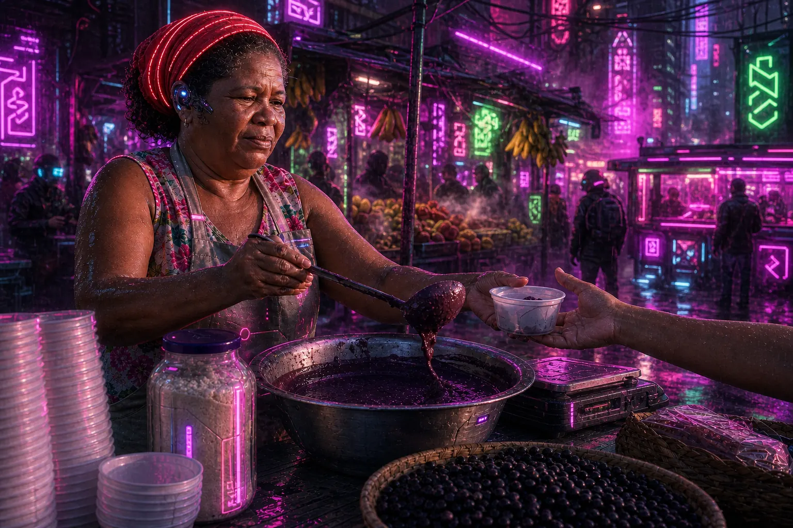
Instrução de edição usada (sobre a imagem-base)
Fully re-render this ENTIRE image — subject AND background — as a CYBERPUNK night scene: rain-soaked street market at night packed with neon signs glowing hot pink, violet and acid green (signs show only abstract glyphs, no readable words), steam rising, wet reflective ground, tangled cables overhead, dense crowded high-tech low-life atmosphere, her headscarf now red with a glowing LED thread and a small cybernetic ear device. Keep the same woman, gesture of serving açaí and the customer's hand.
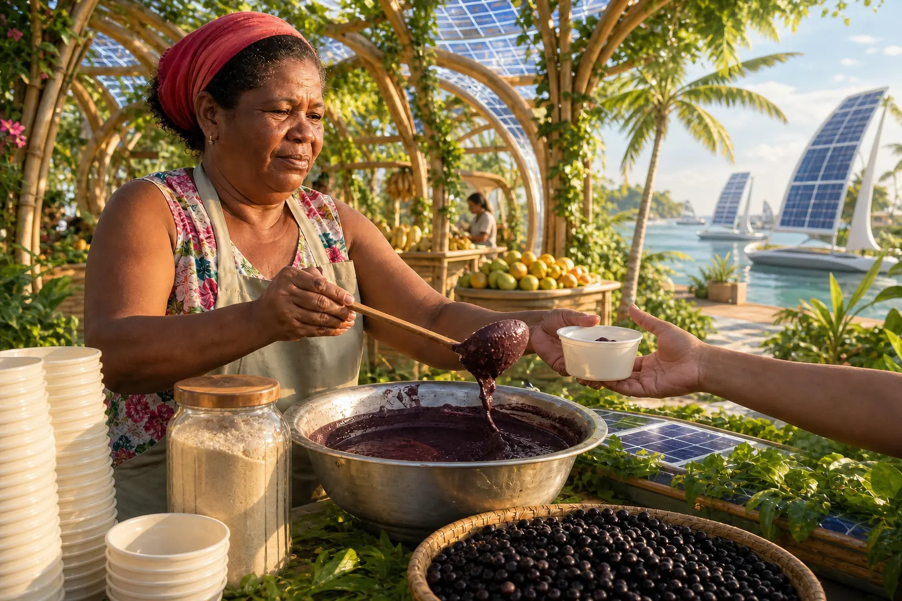
Instrução de edição usada (sobre a imagem-base)
Fully re-render this ENTIRE image — subject AND background — as a SOLARPUNK vision: bright optimistic daylight, the market rebuilt with organic curved bamboo and light timber structures covered in climbing plants and açaí palms, translucent solar-panel canopies casting dappled green-gold light, clean river with sailing boats with solar sails, lush greens, warm whites and sunny yellows, hopeful and sustainable high-tech in harmony with nature. Keep the same woman, headscarf, apron, gesture of serving açaí and the customer's hand. No text on signs.
Três edições da mesma base, as três “do futuro”. Tech limpo: branco, cromo, holograma — inovação corporativa. Cyberpunk: noite, chuva, neon rosa e verde-ácido, cabos — futuro sombrio e denso. Solarpunk: bambu, plantas, toldos solares, luz verde-dourada — futuro otimista. Para um festival de bioeconomia amazônica, só uma delas faz sentido.
Instrução de edição usada (sobre a imagem-base)
Fully re-render this ENTIRE image — subject AND background — in a GRITTY DARK aesthetic: night-time, the stall lit only by one hard bare bulb hanging above her, very high contrast, deep crushed black shadows swallowing the market, desaturated palette of dirty greys and browns with the purple açaí nearly black, rough textures emphasized — sweat on skin, scratched aluminium, cracked wood, wet concrete floor — heavy grain, urban documentary realism, raw and intense. Her expression serious and tired. Keep the same woman, headscarf, apron, gesture and the customer's hand. No text on signs.
O sombrio em tamanho maior: a única fonte de luz é a lâmpada nua acima dela; o resto do mercado sumiu na sombra. O açaí virou quase preto. A dignidade da vendedora se mantém porque o rosto está iluminado e a expressão é séria, não sofrida — é o cuidado que esta família exige.
6Subestilos: o vocabulário fino dentro de cada família
O que é
Dentro de cada família existem dezenas de subestilos. Eles não são caixas rígidas — são vocabulário: ajudam a dizer com uma ou duas palavras um conjunto inteiro de decisões, e trazem junto uma referência de geração e de cultura. Muitos nasceram em redes sociais e mudam de nome rápido; o que importa é saber descrevê-los pelos elementos.
Catorze subestilos úteis
| Subestilo | Família | Marcas visuais (para o prompt) | Fala com / evoca |
|---|---|---|---|
| Noir | Cinematográfico | preto e branco, luz dura única, sombras em faixas, fumaça | mistério, tensão, clássico |
| Blockbuster teal & orange | Cinematográfico | sombras azul-petróleo, pele âmbar, anamórfico, flares | ação, grandiosidade |
| Quiet luxury | Minimalista | pedra, linho, cerâmica fosca, neutros, luz rasante | riqueza discreta, adultos |
| Japandi | Minimalista | madeira clara, linhas retas, bege e preto, vazio | calma, casa, bem-estar |
| Barbiecore | Editorial | rosa saturado dominante, brilho, pose teatral | diversão, ironia pop |
| Indie sleaze | Editorial / Retrô | flash duro, festa, maquiagem borrada, anos 2000 | juventude, noite, descontrole |
| Cottagecore | Sonhador | campo, flores, vestidos de algodão, luz dourada suave | refúgio, vida simples |
| Dark academia | Sonhador / Sombrio | bibliotecas, madeira escura, tweed, luz de vela, verde-garrafa | estudo, melancolia, tradição |
| Kodachrome anos 70 | Retrô | vermelhos e amarelos intensos, grão, borda de papel | memória familiar, 50+ |
| Y2K | Retrô / Futurista | cromo prateado, azul-bebê, brilho plástico, fontes “tecnológicas” da virada | nostalgia dos anos 2000, geração Z |
| Vaporwave | Retrô / Futurista | rosa e ciano, gradientes, estátuas, grade em perspectiva | ironia digital, internet dos anos 90 |
| Grunge urbano | Sombrio | concreto, pichação, grão pesado, dessaturado | rua, rebeldia |
| Cyberpunk | Futurista | noite, chuva, neon rosa/verde-ácido, cabos, densidade | distopia, games, alta tecnologia |
| Solarpunk | Futurista | plantas, bambu, painéis solares, luz dourada, céu limpo | futuro otimista, sustentabilidade |
Por que aprender
O nome do subestilo ajuda o modelo a “entrar no bairro certo”, mas sozinho ele é fraco e instável: o mesmo nome pode puxar clichês diferentes em modelos diferentes. Sempre escreva o nome e três ou quatro marcas visuais dele. Se um dia o nome sair de moda, as marcas visuais continuam funcionando.
Conceitos-chave em ação
Da família ao subestilo
Leia em pares, da esquerda para a direita. O subestilo não troca de família: ele aperta o vocabulário dela. O noir continua cinematográfico (luz de cena, sombra profunda), mas tira a cor, reduz tudo a um único poste de luz dura e acrescenta névoa e reflexos molhados. O cyberpunk continua futurista (tecnologia, brilho), mas troca o dia limpo e cromado pela noite de neon rosa e violeta, letreiros e multidão. Nos dois casos, o que muda são marcas visuais que você consegue escrever — por isso o nome sozinho não basta.
✓ Subestilo bem pedido
- 1940s film noir: black and white, single hard light, venetian-blind shadows, drifting smoke
- solarpunk: bamboo structures with climbing plants, translucent solar canopies, green-gold daylight
- quiet luxury: matte stone, heavy linen, bone white and oat, one raking window light
✗ Subestilo mal pedido
- noir style
- solarpunk aesthetic, 8k, trending
- old money luxury vibe
7Como pedir uma estética com força
O que é
Aplicar uma estética tem quatro regras simples: (1) nomeie a família (e o subestilo, se houver); (2) descreva a paleta, a luz, a textura e o clima com palavras visuais; (3) mantenha o mesmo vocabulário em todas as variações da série; (4) gere várias opções e escolha a direção mais forte.
Anatomia do prompt de estética (edição de uma base)
Fully re-render this ENTIRE image — subject AND background — as <FAMÍLIA / SUBESTILO>: <PALETA: 3-4 cores e saturação>, <LUZ: fonte, direção, dureza, horário>, <TEXTURA / SUPORTE: grão, brilho, névoa, época, grau de realismo>, <MUNDO: o que muda no cenário, figurino e objetos para caber na estética>, <CLIMA: 2-3 palavras>. Keep the same <pessoa>, <gesto> and <elemento-chave da cena>. No text on signs.
A anatomia aplicada: base → futurista
Prompt usado
Medium-wide shot of an açaí vendor at an open-air riverside market in Belém, Brazil, late afternoon. She is a Black Brazilian woman in her late 40s with short natural hair under a faded red headscarf, wearing a sleeveless floral blouse and a plain canvas apron, ladling thick dark-purple açaí from a large aluminium basin into a white plastic bowl for a customer whose hand reaches in from the right edge. On her wooden stall: stacked bowls, a jar of tapioca flour, a scale, straw baskets of açaí berries. Behind her, blurred market stalls with blue tarpaulin awnings, hanging bunches of bananas, and a glimpse of the river with a wooden boat. Shot at eye level on a 35mm lens at f/4, vendor on the left third. Warm low sun from the right, around 4000K, soft side shadows. Neutral, straightforward documentary photograph, natural colors, no stylization. No text anywhere in the scene: no signs, no chalkboards, no printed words on clothing, no brand names or logos on scales or products.
Instrução de edição usada (sobre a imagem-base)
Fully re-render this ENTIRE image — subject AND background — as a FUTURISTIC TECH vision of the same market in 2080: the wooden stall becomes a sleek white-and-chrome counter with glowing edge lights, the aluminium basin becomes a polished chrome vessel, holographic cyan interface panels float above the fruit, the awnings become curved glass canopies, the river behind has sleek electric boats. Cool palette of electric cyan, white and chrome with magenta rim light outlining her silhouette, glossy reflective surfaces, clean geometry, crisp digital precision, no grain. Her headscarf and apron become refined technical fabric. Keep the same woman, face, gesture of serving açaí and the customer's hand. No text anywhere.
Confira cada linha da anatomia na imagem da direita. Paleta: ciano, branco e cromo no lugar de madeira e lona azul. Luz: bordas luminosas no balcão e brilho frio nas superfícies. Textura: tudo liso e reflexivo, sem grão. Mundo: a banca de madeira virou balcão cromado, surgiram painéis holográficos, a margem ganhou barcos futuristas e a roupa virou tecido técnico. Mantido: a mesma mulher, o gesto de servir, a bacia de açaí e a mão da cliente — exatamente o que o “Keep the same” pediu.
Por que aprender
Repare também no item mundo: uma estética não é só cor e luz por cima. O retrô trocou o pote plástico por uma caneca esmaltada; o futurista trocou a banca de madeira por um balcão cromado; o minimalista removeu o mercado. Quando o cenário contradiz a estética (um celular numa foto dos anos 70), a imagem denuncia o filtro.
Conceitos-chave em ação
Teste de reconhecimento (use em toda imagem estilizada)
- Mostre a imagem por 2 segundos a alguém (ou olhe de relance, depois de um intervalo).
- Pergunte: “que tipo de imagem é essa?”. A resposta tem de ser a família que você pediu.
- Se a resposta for “uma foto normal”, a estética está fraca: reforce paleta, luz e suporte.
- Se a resposta for outra família, alguma camada está puxando para o lado errado (ex.: pastel demais num cinematográfico).
- Confira os anacronismos e os objetos: o mundo combina com a estética?
8Escolher pela meta, não pela moda
O que é
Para reconhecer a estética de uma referência, use cinco perguntas de diretor: Que cores dominam? Como a cena está iluminada? Que clima ela cria? Que texturas se repetem? A composição é limpa ou cheia? As respostas quase sempre apontam uma família — e às vezes duas (as misturas, ou híbridos, são o assunto do módulo 2-2).
Por que aprender
Estética não é tendência, é significado. Um festival de tecnologia com visual sonhador confunde; uma marca de skincare com visual sombrio assusta; uma campanha sobre tradição com visual futurista-cromado apaga a história. A tabela abaixo é o seu ponto de partida — não uma regra: use-a para ter uma primeira hipótese e depois teste.
Conceitos-chave em ação
Escolha por objetivo (ponto de partida)
| Se o objetivo é… | A emoção é… | Comece por… | Evite… |
|---|---|---|---|
| contar uma história, emocionar | envolvimento, importância | Cinematográfico | Minimalista (tira o contexto) |
| passar confiança num produto | segurança, clareza | Minimalista | Sombrio, Sonhador |
| lançar tendência, vender moda/beleza | desejo, atitude | Editorial | Retrô genérico |
| criar afeto, bem-estar, memória | calma, ternura | Sonhador | Futurista, Sombrio |
| valorizar herança, tradição, gente real | autenticidade, proximidade | Retrô (com a década certa) | Futurista cromado |
| transmitir força, energia, atitude de rua | intensidade, rebeldia | Sombrio | Sonhador, Minimalista |
| apresentar tecnologia ou inovação | curiosidade, avanço | Futurista (e o subestilo certo) | Retrô, Sonhador |
Prática guiada: sua cena em três estéticas, e a escolha justificada
Você vai fazer com uma cena sua o que este módulo fez com a vendedora de açaí: gerar uma base neutra, reescrevê-la em três famílias que façam sentido para um objetivo real e escolher uma, justificando pela cadeia objetivo → emoção → estética.
Roteiro
- Defina um objetivo concreto (ex.: “cartaz do festival de cultura popular da minha cidade”, “post de lançamento de um café”).
- Gere uma base neutra e documental da cena principal (molde abaixo). Evite já pedir estilo: a base tem de ser um ponto de partida limpo.
- Escolha três famílias plausíveis para o objetivo — pelo menos uma que você acha que não vai funcionar, para comparar.
- Faça as três edições com o prompt de re-render completo.
- Aplique o teste de reconhecimento em cada uma. Refaça as que falharem, reforçando paleta, luz e suporte.
- Coloque as quatro lado a lado e escreva 5 frases: o que cada estética comunica e qual serve ao objetivo, e por quê.
Base neutra (gerar)
Objetivo: Criar uma cena documental sem estilo marcado, pronta para ser reestilizada.
Medium-wide shot of <pessoa: idade, aparência, roupa> <ação física concreta> at <lugar brasileiro específico>, <horário>. <2-3 objetos importantes da cena>. <O que aparece ao fundo>. Shot at eye level on a 35mm lens at f/4, subject on the left third. <Luz natural simples>. Neutral, straightforward documentary photograph, natural colors, no stylization. No text on signs.
Como verificar: A base parece uma foto “sem opinião”? Se ela já saiu muito estilizada (pôr do sol dramático, grão forte), gere de novo pedindo luz mais neutra — senão as edições herdam essa estética.
Re-render em uma família (editar a base)
Objetivo: Aplicar uma estética com força, preservando pessoa, gesto e elemento-chave.
Fully re-render this ENTIRE image — subject AND background — as a <FAMÍLIA / SUBESTILO> image: <paleta com 3-4 cores>, <luz: fonte, direção, dureza>, <textura e suporte: grão / brilho / névoa / época / grau de realismo>, <o que muda no cenário, figurino e objetos>, <clima em 2-3 palavras>. Keep the same <pessoa>, the same <gesto> and <elemento-chave>. No text on signs.
Como verificar: Em dois segundos dá para dizer qual é a família? A pessoa continua a mesma? O cenário combina com a estética, sem anacronismos?
Exemplo pronto (a mesma base, estética retrô)
Objetivo: Ver um re-render completo funcionando antes de escrever o seu.
Fully re-render this ENTIRE image — subject AND background — as an authentic RETRO / VINTAGE photograph from a 1970s Brazilian family album: warm faded Kodachrome-like colors with yellowed whites and orange-shifted skin, visible coarse film grain, soft slightly imperfect focus, light leak in the upper right corner, a faint vignette, rounded print corners and a thin white paper border, candid unposed feeling. Period-correct details: her clothes become a 1970s floral dress, the plastic bowl becomes an enamel cup, a wooden boat with painted stripes behind. Keep the same woman, headscarf, gesture of serving açaí and the customer's hand. No text on signs.
Como verificar: Compare com a imagem “Retrô / vintage” do módulo: o que o seu gerador fez diferente? Se ficou tímido, repita “ENTIRE image” e aumente o peso do grão e da borda de papel.
Lição de casa
No caderno de olhar, abra a seção *Estéticas*. Ela vai receber boards por família e, no módulo 2-2, os seus híbridos.
Nível básico (obrigatório)
- Monte três boards pequenos (10–15 referências cada), um por família diferente, pensando no projeto em que você está trabalhando.
- Para cada board, liste de 5 a 7 características (cor, luz, textura, clima, composição) e confira se batem com a tabela da família neste módulo.
- Escolha uma estética pela cadeia objetivo → emoção → estética → paleta e luz → referências, e escreva a justificativa em 3 frases.
- Gere três imagens nessa estética com o mesmo bloco de estilo, assuntos diferentes. Salve os prompts.
- Passe as três pelo teste de reconhecimento e anote o resultado.
Nível avançado (desafio)
- Grade das sete: gere uma base neutra sua e as sete famílias por edição, como no módulo. Monte a grade e escreva, para cada uma, a meta-mensagem em uma frase com as suas palavras.
- Subestilo contra subestilo: escolha uma família e faça dois subestilos com meta-mensagens opostas (como cyberpunk × solarpunk). Descreva para qual público e objetivo cada um serviria.
Entregue/guarde: No caderno de olhar: os três boards com as características anotadas, a estética escolhida com a justificativa pela cadeia, as três imagens com prompts e o resultado do teste de reconhecimento. No avançado, a grade das sete com as meta-mensagens.
Teste sua decisão
1. Uma cooperativa de açaí quer um cartaz para vender o produto como premium em lojas de São Paulo, sem tirar o foco do produto. Qual família é o melhor ponto de partida?
Consultar a explicação
Objetivo: vender como premium com foco no produto → emoção: confiança, clareza → minimalista. O quiet luxury ainda acrescenta material e textura “caros”. O sombrio comunica intensidade e rebeldia; o sonhador sacrifica a informação do produto.
2. Você pediu “make it retro” sobre uma foto realista e o resultado ficou quase igual à original. O que fazer?
Consultar a explicação
Edições de estilo tímidas mudam pouco. O re-render completo com a década e as camadas descritas (cor, grão, vazamento de luz, borda, objetos de época) é o que faz a estética aparecer. Sinônimos vagos não acrescentam decisão nenhuma.
3. Cyberpunk e solarpunk pertencem à mesma família. Por que isso importa na escolha?
Consultar a explicação
A família dá o território (tecnologia, futuro); o subestilo dá o tom. Para um festival de bioeconomia, o solarpunk comunica esperança; o cyberpunk, ameaça.
Responder não marca a leitura nem bloqueia o próximo módulo.
O que levar desta aula
- Estética é linguagem: cada família tem uma meta-mensagem que o público sente antes de pensar.
- As sete famílias: cinematográfico, minimalista, editorial, sonhador, retrô, sombrio e futurista.
- Toda estética se monta com os mesmos ingredientes — cor, luz, composição, textura, clima — e com o mundo certo (cenário, figurino, objetos).
- Subestilos refinam o tom e podem até inverter a mensagem; peça sempre o nome e as marcas visuais.
- Para aplicar com força: re-render da imagem inteira, paleta + luz + textura + clima, e o teste de reconhecimento em 2 segundos.
- Escolha pela cadeia objetivo → emoção → estética → paleta e luz → referências, não pela moda da semana.